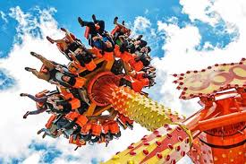
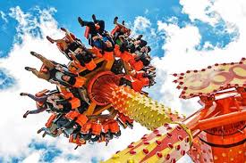

Foto Utama


Pertualangan Tak Terlupakan Di Jawa Timur
Jatim Park 1terletak di:
Jl. Kartika No.2, Sisir, Kec. Batu, Kota Batu, Jawa Timur 65315, Indonesia.Terletak di kawasan strategis Kota Batu, berdekatan dengan berbagai hotel dan pusat kuliner.
Jatim Park 1 menghadirkan pengalaman liburan keluarga terbaik di Kota Batu dengan konsep unik yang memadukan wahana pemacu adrenalin dan taman edukasi interaktif. Sebagai destinasi 'Science & Coaster Park' terkemuka, pengunjung dapat menantang keberanian di wahana ikonik seperti Superman Coaster, Flying Tornado, dan Pendulum 360 yang baru saja beroperasi kembali, atau menjelajahi kecanggihan teknologi terbaru di Metaverse Glass Theater. Tak hanya hiburan, website kami menyediakan panduan lengkap mulai dari eksplorasi alat peraga di Science Center, ribuan artefak di Indonesia Heritage Museum, hingga tiket terusan praktis menuju Museum Angkut dan Museum Tubuh. Dengan fasilitas lengkap seperti Shuttle Car, Food Court bertema, hingga Pasar Wisata, Jatim Park 1 adalah pilihan sempurna untuk petualangan seru sekaligus wawasan budaya bagi segala usia.
Jatim Park 1 didirikan pada tahun 2001 oleh Jawa Timur Park Group sebagai taman eduwisata pertama di Jawa Timur yang mengusung konsep "edutainment" - pendidikan melalui hiburan. Ide pembangunannya berawal dari visi untuk menciptakan destinasi wisata yang tidak hanya menghibur tetapi juga mendidik, khususnya bagi generasi muda.
Jatim Park 1 buka untuk kunjungan sepanjang tahun dengan jadwal berikut:


 



Pusat Tiket:
Jl. Kartika No. 2, Sisir. Jatim Park 2 (Batu Secret Zoo & Museum Satwa) di Jl. Oro-Oro Ombo No. 9. Jatim Park 3 (Dino Park & Millennial Glow) di Jl. Ir. Soekarno No. 144, Beji
Telepon: +49 (0)8362 93083-0
Email: info@ticket-center-hohenschwangau.de
Website Resmi: https://jtp.id/jatimpark1/mobile/index.html
Untuk reservasi online: https://ticket.jtp.id/?_gl=1*1i5m3vq*_ga*MTA5NTA4NzM0My4xNzcwODY4MTQ2*_ga_4EPMJ11PHW*czE3NzA4NjgxNDYkbzEkZzAkdDE3NzA4NjgxNDYkajYwJGwwJGgw